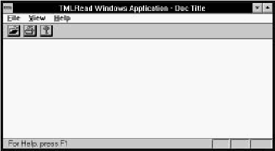

Home
| Search
| CTG
| RTL
| IDDE
| STL
Home
| Search
| CTG
| RTL
| IDDE
| STL
Last update Fri Apr 28 16:30:17 2006
|
Reference 1. Introducing Digital Mars C++ 2. Introducing the IDDE Part 2: Creating an Application with Digital Mars C++ 3. Starting a Project and Defining Workspaces 4. Generating an Application Framework 5. Defining Classes and Their Hierarchies 6. Editing Program Code 7. Adding Look and Feel with Resources 8. Testing an Application Part 3: Learning Digital Mars C++ by Example 9. Introduction to the Tutorial 10. Lesson 1: Create the DOS Application 11. Lesson 2: Generate an Application Framework 12. Lesson 3: Customize the Interface 13. Lesson 4: Add Messages with ClassExpress 14. Lesson 5: Add a Dialog Box with ClassExpress Part 4: More about Creating Programs 15. More about Projects and Workspaces 16. More about Project Build Settings 17. More about AppExpress 18. More about ClassExpress 19. Class Editor Reference 20. Hierarchy Editor Reference 21. Text Editor Reference 22. Using Version Control Part 5: More about Testing Programs 23. Controlling and Configuring the Debugger 24. Commands Available in Debugging Mode Part 6: About Managing Resources 25. ResourceStudio Resource Editor 26. Dialog Editor 27. Menu, Accelerator and String Table Editors 28. Bitmap, Cursor, Icon, and Font Editors 29. Version Information and Custom Resource Editors Part 7: Appendixes A. Expression Evaluation B. IDDE Settings and Command-Line Options C. Using NetBuild |
12. Lesson 3: Customize the InterfaceAfter an application framework has been generated with AppExpress, it is usually necessary to customize the user interface. This typically is an ongoing process; as your application evolves, you can add and remove interface elements. In this lesson you perform the initial stage of customization. You will:
Before starting this lesson, start the IDDE and open the project tmlread.prj found in directory samples\tutorial\lesson3\start. Launching ResourceStudioAn application's resources are contained in a resource script file, which includes descriptions of menus, dialog boxes, and other user interface elements. The resource script file is edited with ResourceStudio. To launch ResourceStudio:
[Figure 12-1 The Browser window of ResourceStudio] The TML Reader is only able to read and display TML files; it cannot edit or write them. Thus, you can remove menu items related to editing and saving. Customizing the MenuIn this section you customize TMLRead's menu.Within ResourceStudio are several individual editors, each capable of editing a single type of resource. For example, the Dialog editor is used to edit dialog box resources, and the Menu editor to edit menu resources. By default, the editors use the right pane of the Browser window. To start the Menu editor:
[Figure 12-2 The Menu editor in the Browser window] As the Menu editor opens, the Property Sheet also opens (Figure 12-2). This window is used to edit resource and resource element properties and options.
[Figure 12-3 The Property Sheet] The Test Menu pop-up window also opens simultaneously with the Menu editor (Figure 12-2). It is a top-level window whose menu is identical to the one you are editing. This window does nothing when you choose menu items that are not top-level menu items or submenus. Because changes you make to the menu in the Browser window are immediately reflected in the menu of the Test Menu window, you can verify your changes as you make them.
[Figure 12-4 The Test Menu window] Now you can remove unnecessary menus and menu items.
To close the Menu editor, choose Close Editing from the File menu, or press Escape. The Browser window menu and toolbar return. The right pane shows a preview of the menu. Although we have removed menu items for commands that will not be supported, at present it would still be possible to access some of those commands through their accelerators. In the next section we remove those commands from the accelerator table. Customizing the Accelerator TableTo start the Accelerator Table editor:
[Figure 12-5 The Accelerator Table editor in the Browser window] Removing accelerators is quite similar to removing menu items. To remove the unnecessary accelerators:
To close the Accelerator Table editor, press Escape. Commands may be sent to TMLRead in one other way: by clicking on buttons in the toolbar. In the next section we replace the toolbar bitmap with one containing only commands that are supported by TMLRead. Importing a New Toolbar BitmapBefore importing a new toolbar bitmap, delete the current toolbar bitmap:
Exiting ResourceStudioTo save your work and exit Resource Studio:
Setting Up the New ToolbarThe MFC framework uses a single bitmap to represent a set of toolbar buttons. The correspondence between the button images in the bitmap and the commands they represent is established in an array in the source code. Because you have replaced the original toolbar bitmap, you also must update this array.
In the last section you build the application and view the results of your labor. Building and Running the ApplicationTo build and run the application, choose Execute Program from the IDDE Project menu. Because no executable has yet been built, the IDDE automatically builds TMLRead and then runs it. (When you try to run an existing executable that needs to be rebuilt, the IDDE asks if you want to rebuild the program before running it.)The source files are recompiled, the resource script is compiled by the resource compiler, and all the object files and resources are linked together to create the final application. Then the IDDE minimizes itself and executes the application (Figure 12-7). You can verify that the changes you made to the menu and toolbar are correct. To close the application, choose Exit from the File menu.  [Figure 12-7 TMLRead with customized menu and toolbar]
You now have completed initial customization of TMLRead's
resources. You deleted excess menu items and accelerators and
installed a new toolbar bitmap. More changes to the application's
resources can be made as the need arises; in Lesson 5, for example,
you will return to ResourceStudio to add support for a Preferences
dialog box. In the next lesson, though, you will use ClassExpress to
install functions to handle Windows messages, such as those
generated by key presses and button clicks.
|